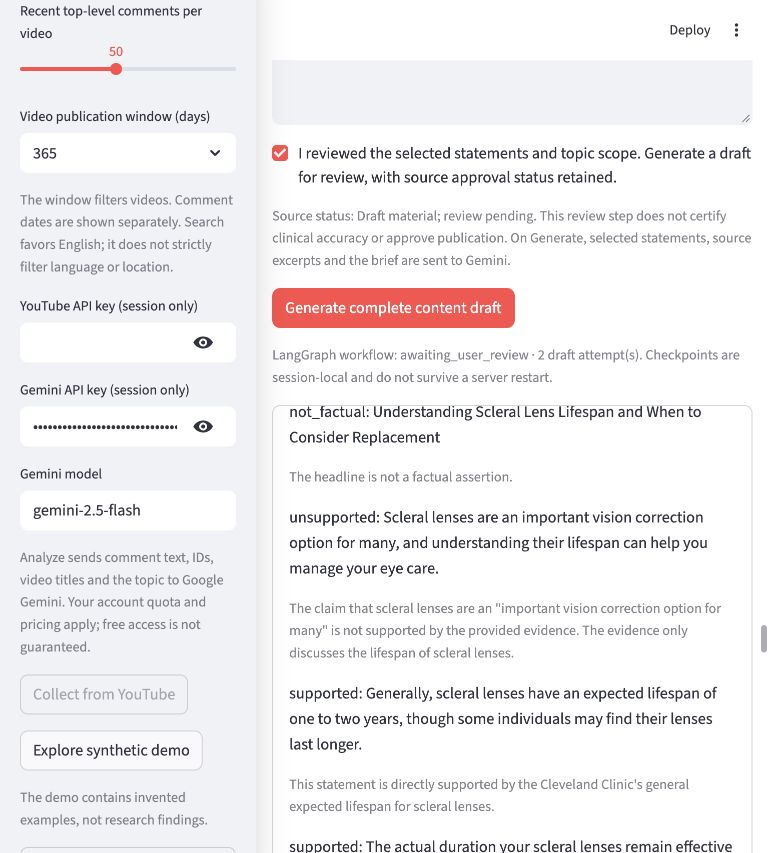
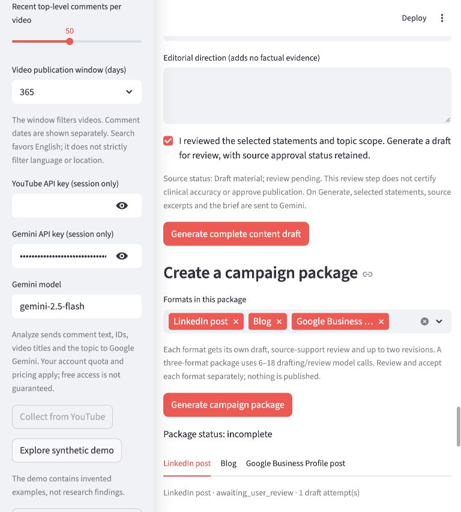
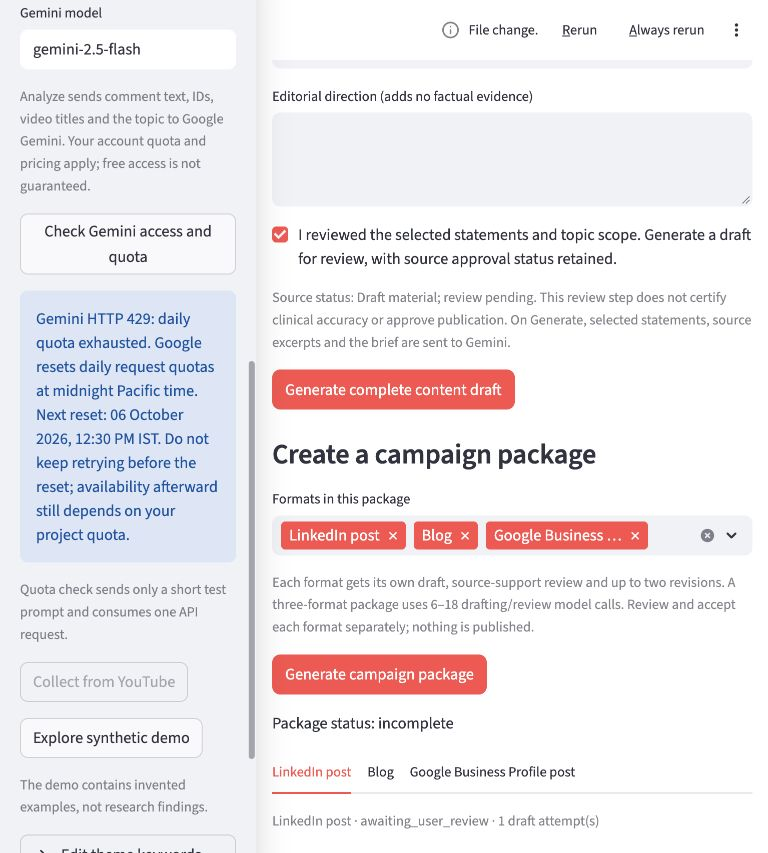

Platform-policy correction, October 6: The scleral-lens Google Business Profile draft is withheld pending platform-policy review. Its source-support check passed, but that does not establish suitability for GBP. This is our conservative interpretation of Google’s regulated-products guidance, not a rejection issued by Google. Earlier screenshots and outputs are historical evidence.
October 6 update: saved campaigns and successful live review resumption
← Earlier saved campaign sample5 October 2026 · Saved development evidence
Drafts that get checked before you review them
The local GTM Agent now uses LangGraph to draft, check source support, request bounded revisions, and pause for human review. You can also start with your own topic and generate a campaign package.
This public page displays saved results. It does not run Gemini or accept your documents. Medical examples remain unapproved drafts. The complete live campaign package is not yet verified.
Two ways to start
Discover a topic
Analyze collected YouTube comments, inspect the audience evidence, and choose a question.
I already have a topic
Enter your topic and upload reference documents. No comment collection or audience analysis is required, and no audience-demand claim is made.
Both paths require relevant source evidence and a reviewed topic before drafting. The app currently accepts Markdown and plain text.
Verified live: an automatic correction
In a separate single-blog run, the reviewer rejected an unsupported introduction. The app requested a rewrite, checked the revised draft, and paused for user review. There were two draft attempts and no manual text corrections.
The reviewer also flagged a general sentence about noticing lens changes. That flag was overly strict. A model support check can miss errors or overflag wording; it does not establish source truth or clinical accuracy.
Inspect the automatically revised blog
Campaign package: live status by format
One reviewed topic can produce LinkedIn, blog and Google Business Profile drafts. Each format has a separate check, approval and retry. A failed format does not erase passing drafts.
Package incomplete. LinkedIn passed. The blog was rewritten after an uncited introduction, but its review hit HTTP 429. Google Business Profile review also hit HTTP 429. A subsequent small diagnostic request confirmed daily quota exhaustion for the configured Gemini model. No blocked draft is presented as ready for approval.
Download complete campaign audit (JSON) · Download reviewable package (Markdown)
What was tested
- 88 automated tests pass. They cover source references, no-evidence blocking, direct-topic planning, bounded revisions, independent approvals, stale-input invalidation, retries and quota diagnostics. Model responses are mocked in automated tests.
- Live evidence: the standalone blog completed automatic revision and review. Direct-topic planning worked. The later package remains incomplete because reviews hit quota limits.
- Correction history: earlier failed format runs remain in the audit. Exact quotes assigned to a wrong overlapping passage can only be relocated to a unique retrieved passage in the same document, with the reference change recorded.
Actual Streamlit screenshots
Automatic source-support review

Campaign package and format tabs

Confirmed daily quota error
The diagnostic was captured on 5 October. Its displayed reset time is a historical result, not a live availability indicator.

Still to finish
Complete live reviews for all three package formats when quota is available. Session state is not durable across server restarts. Independent user testing and clinical approval remain pending. The draft checker does not yet verify every audience interpretation or topic rationale; earlier research wording overstated frequency from one cited comment.
There is no automatic publishing, scheduling or Deep Agents integration. The app uses Gemini; LangGraph coordinates the workflow. The 4 October sample remains labelled with its original manual editorial review history.